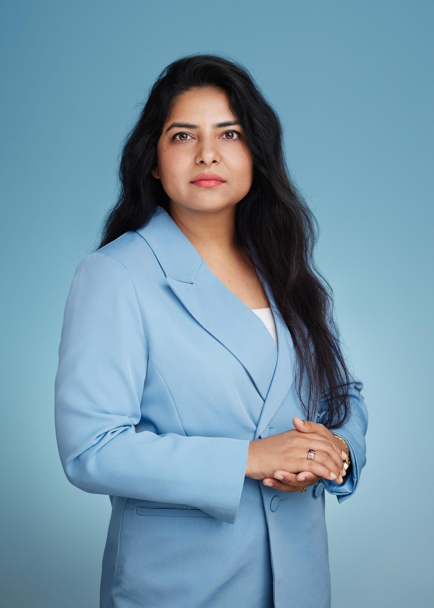
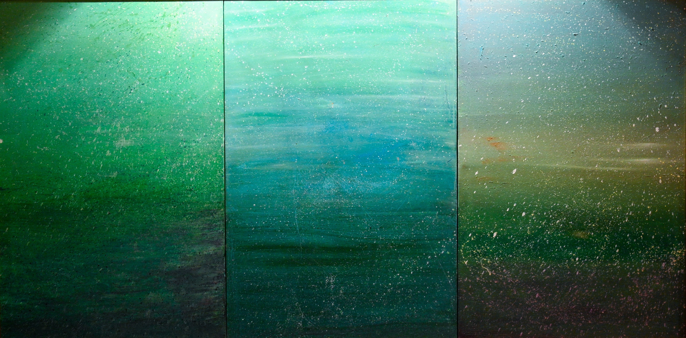

Featured Artist · Cosmopolitan Art Magazine Pakistan
In Soraya Sikander’s atmospheric landscapes, nature becomes more than a subject. It becomes a shared language capable of holding memory, movement, uncertainty and the possibility of coexistence.
Featured Work
The painting opens into an expansive field of emerald, turquoise and softened grey, where light gathers, shadows deepen and fine white marks move across the surface like rain, mist or pollen suspended in the air.

After the Rain · Oil on canvas · 101.6 by 193.04 cm with frame · 10th China Beijing International Art Biennale
At first, After the Rain does not reveal a forest in the conventional sense. There are no sharply defined trees, no fixed horizon and no single path directing the eye into the distance. Instead, an atmosphere unfolds slowly, holding the viewer between weather, memory and renewal.
This ambiguity is central to Sikander’s practice. Her paintings do not simply document the natural world. They transform it into emotional and psychological space, where landscape becomes less a geographical location and more a state of transition.
“The landscape is present, yet it remains deliberately unresolved.”
The scale of After the Rain allows the viewer to encounter it almost bodily. The horizontal format encourages the eye to travel slowly across the surface, moving from one tonal environment to another.
The left section is dense and deeply green, carrying the visual weight of wet earth and enclosed vegetation. The centre opens into a luminous field of turquoise, while the right side shifts through grey-green, blue and muted brown. Flecks, scratches and delicate bursts of white interrupt the painted surface like rainfall, reflected light or marks left after a storm.
Sikander is known for her landscapes, organic forms and pioneering Calligraphy Landscapes. Working primarily in oil and acrylic on canvas, she develops a visual language in which the natural world moves between representation and abstraction.
Within this practice, calligraphy becomes more than written language. It becomes rhythm — visible through the sweep of a branch, the movement of wind, the repetition of a line and the flow of colour across the surface.
After the Rain was presented at the 10th China Beijing International Art Biennale, an international exhibition centred on the theme of Coexistence. According to the exhibition material shared, Sikander was the only artist selected from Pakistan for the Theme Exhibition.
Her response to coexistence is not literal. There are no gathered figures and no direct symbols of diplomacy or nationhood. Instead, the idea is expressed through the internal relationships of the painting itself. Separate panels share one atmosphere. Darkness and luminosity occupy the same field. Difference is not erased; it is allowed to exist within a larger visual harmony.
Sikander’s artistic practice has been shaped by journalism, communication, traditional technique, observational training and art education. Her studies include Beaconhouse National University, the Slade School of Fine Art summer programme, the London Atelier of Representational Art, fresco painting at the National College of Arts and manuscript illumination, Tehzib and Naqqashi at Hast o Neest.
Her role as an educator has extended across institutions and communities in Pakistan and the United Arab Emirates, including teaching, curriculum development and workshops in art history, drawing and painting.
Over the course of her career, Sikander has participated in more than 25 international solo and group exhibitions at galleries, museums and cultural institutions. Her work has been presented across Pakistan, the United Arab Emirates, Singapore, the Netherlands, the United Kingdom, Bangladesh, China and Moldova.
Although her work moves internationally, it remains connected to South Asian visual culture through calligraphy, illumination, fresco, organic forms and landscape. Her practice is shaped by several methods of looking, learning and making.
The emotional power of After the Rain lies in its refusal to dramatise renewal. There is no sudden burst of sunlight, no easy revelation and no simple resolution. The rain has passed, but its presence remains across the surface.
In Soraya Sikander’s work, nature does not offer an escape from the world. It offers another way of understanding it. Through atmosphere, colour and quiet tension, her landscapes remind us that coexistence is not a finished condition; it is a continuing process of attention, balance and shared presence.
Explore artists shaping contemporary visual culture through practice, memory, material and experimentation.
Back to Featured Artists